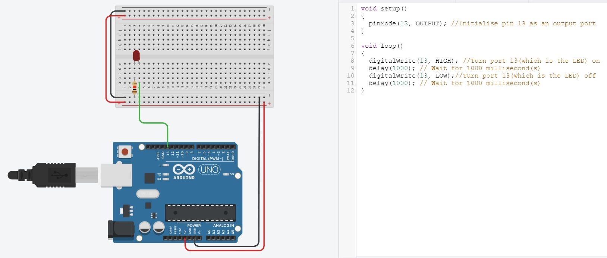
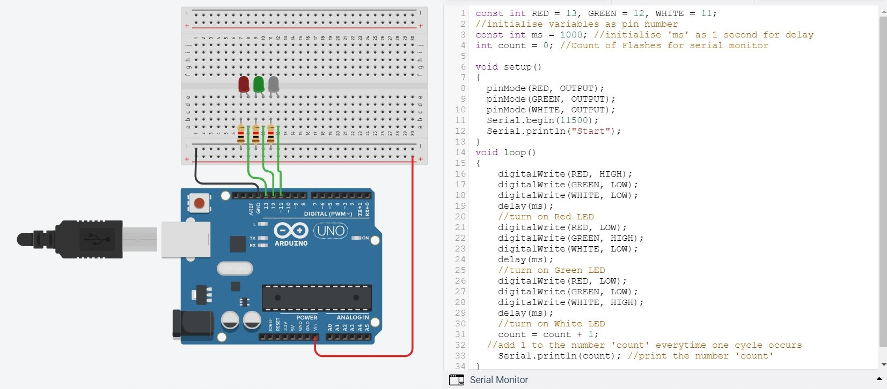
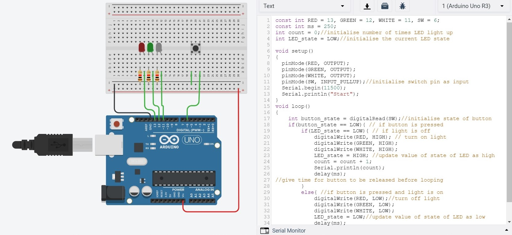
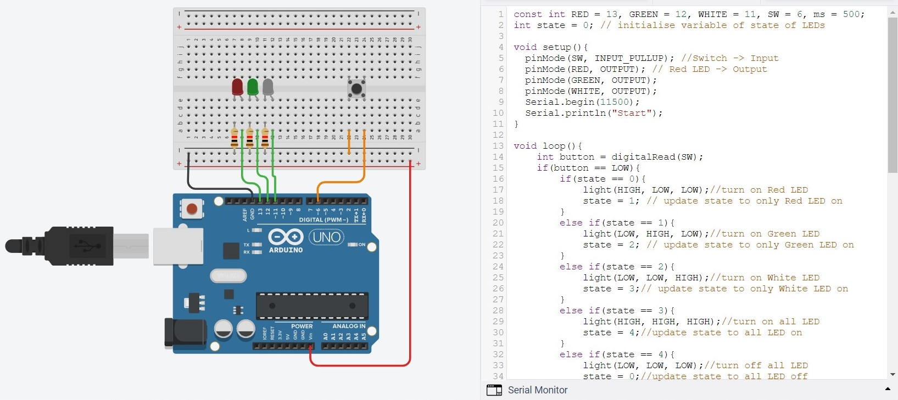
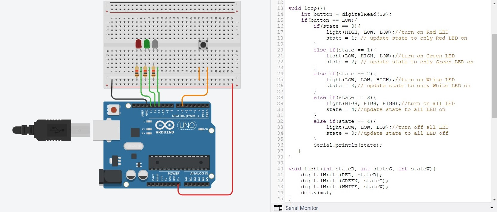
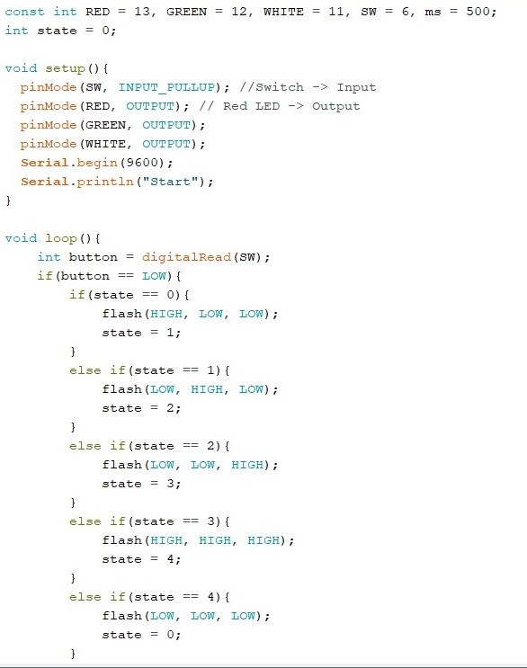
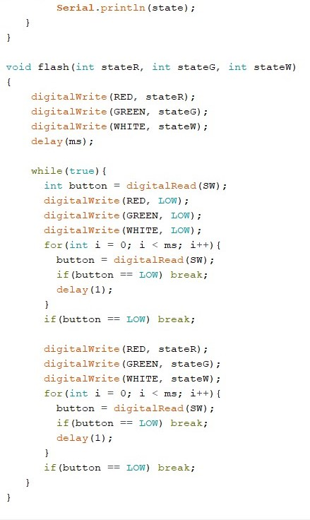

Introduction
Arduino is an open-source electronics platform based on both hardware and software. The hardware consist of the Arduino UNO(a microcontroller), resistors, wires, LEDs, buttons etc whereas the software is the Arduino IDE, an application to program the electronics.
Electronics
Electricity is the flow of electronics in a closed circuit. Voltage is the difference in electrical potential between two points, measured in Volts. Current is the rate of flow of electrical charge past a point, measured in Amps. Electrical resistance of an object is a measure of the opposition to the flow of electric current, measured in Ohms. In order for current to flow, the circuit must be closed, usually with the help of wires. In arduino, a voltage of 5V is supplied by the laptop or computer that is connected to the Arduino UNO, which is the microcontroller. There are various ports on the UNO, 5V (voltage), GND (ground) and multiple digital ports. To program LEDs and other output devices, they must be connected to a digital port which can be referenced by the program as well as the ground. You can use Tinkercad to prototype the electronics virtually with a program.
Programming
The software is the Arduino IDE (Integrated Development Environment), which is a cross-platform application (runs on Windows, MacOS and Linux) which allows you to enter the source code for your application programming. We would be using the IDE to program our electronic project. The syntax of Arduino code is very C/C++ like.
A Sketch is a program written with the Arduino IDE. They are saved on the development systems as text files with the extension .ino/ Each sketch is created in a folder of the same name on the development system. A basic Arduino sketch in C/C++ consists of only two functions. The first is setup(), which is called only once when the sketch starts after power-up or reset and is used to initialize variables, I/O pin modes and other libraries that are used. The second is loop(), where after the setup() function ends, the loop() function is called. This function is executed repeatedly until the board is powered off. In IDE, functions and variables are case-sensitive.
- pinMode(PIN, INPUT/OUTPUT); : Initialise the pin number if it is either a INPUT or an OUTPUT
- digitalWrite(PIN, HIGH); : Turn on the device connected to the pin
- delay(x); : Wait for x milliseconds
Task 1
Connect a LED with a current limiting resistor to the Arduino Uno board. Write a program to blink the LED in a variety of patterns.
- Bring up an UNO connected to a breadboard.
- Connect a red LED to the breadboard.
- Using breadboard connection, connect the anode of the LED to the digital port '13' in the UNO with a wire, and the cathode to the Ground with a resistor.
- Using the code, write out a program to initialise the pins and program the LED to light up for a second, and turn of for another second. This will make the LED flash.
- Click "Run Simulation" to start the program. 
Task 2
Using the same technique, connect 3 or more LEDs of different colors to the Arduino board. Write a program to produce running lights i.e. the LEDs are lit in sequence e.g. Red -> Green -> White -> Red -> Green -> White and so on.
- Connect 2 more LED of different colour to the breadboard similarly to the red LED
- In the code, add on a few lines to turn the green and white light
- To make it convenient, we can initialise a few variables as pin numbers, and add a serial monitor to keep track how many cycles has occured 
Task 3
Add a switch to the circuit in task 2. You should use a pull-up resistor of 10K if you are operating in INPUT mode. When the switch is pressed, the LEDs will light up. Pressing the switch again will turn the LEDs off. Write and test this program.
- Add a pushbutton switch, connecting one end to port 6 and the other end to ground.
- Initialise port 6 as INPUT_PULLUP
- Write a if-else statement to use the button as a condition for the LED 
Task 4
Use the switch in (3) to control the type of light-up and flashing of the LEDs, for example, initially, LEDs are all in the OFF state. Pressing the switch, turns on only the RED LED. Pressing the switch again, turns on only the GREEN LED. Pressing the switch again, turns on only the WHITE LED. Pressing the switch again, turns on all LEDs. Pressing the switch again, turns off all LEDs returning to the first state.
 Task 4
Modify your program in (4) to flash the LED(s) instead.
 